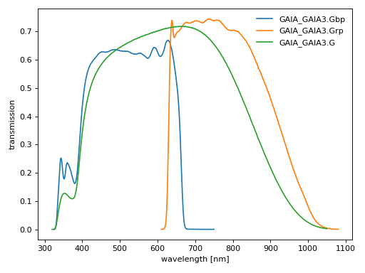

dustapprox.io package
Contents
dustapprox.io package#
Submodules#
dustapprox.io.ecsv module#
The ECSV format allows for specification of key table and column meta-data, in particular the data type and unit.
The “Comma-Separated-Values” format is probably the most common text-based method for representing data tables. The proposed standard in APE6 leverages this universality by using this format for serializing the actual data values.
For science applications, pure CSV has a serious shortcoming in the complete lack of support for table metadata. This is frequently not a showstopper but represents a serious limitation which has motivated alternate standards in the astronomical community.
The proposed Enhanced CSV (ECSV) format has the following overall structure:
A header section which consists of lines that start with the # character and provide the table definition and data format via a YAML-encoded data structure. An initial line in the header section which identifies the file as ECSV and provides a version number. A CSV-formatted data section in which the first line contains the column names and subsequent lines contains the data values. Version 1.0 of the ECSV format specification and the reference Python implementation assumes ASCII-encoded header and data sections. Support for unicode (in particular UTF-8) may be added in subsequent versions.
Note
“Comma-Separated-Values” (CSV) is a misleading name since tab-separated or whitespace-separated tabular data generally fall in this category. We should use “Character-Separated-Values”, which keep the same acronym.
example of file:
# %ECSV 1.0
# ---
# datatype:
# - {name: a, unit: m / s, datatype: int64, format: '%03d'}
# - {name: b, unit: km, datatype: int64, description: This is column b}
a b
1 2
4 3
See also
Enhanced Character Separated Values table format description from the Astropy project.
- dustapprox.io.ecsv.generate_header(df: pandas.core.frame.DataFrame, **meta) str[source]#
Generates the yaml equivalent string for the ECSV header
- Parameters
df (pd.DataFrame) – data to be written to the file.
meta (dict) – meta data to be written to the header. Typically keywords, comments, history and so forth should be part of meta. df.attrs will be automatically added to the meta data.
- Returns
header – the header corresponding to the data.
- Return type
str
- dustapprox.io.ecsv.read(fname: str, **kwargs) pandas.core.frame.DataFrame[source]#
Read the content of an Enhanced Character Separated Values
- Parameters
fname (str) – The name of the file to read.
- Returns
data – The data read from the file.
- Return type
pd.DataFrame
- dustapprox.io.ecsv.read_header(fname: str) dict[source]#
read the header of ECSV file as a dictionary
- Parameters
fname (str) – The name of the file to read.
- Returns
data – the header of the file.
- Return type
dict
- dustapprox.io.ecsv.write(df: pandas.core.frame.DataFrame, fname: Union[str, _io.TextIOWrapper], mode: str = 'w', **meta)[source]#
output data into ecsv file
- Parameters
df (pd.DataFrame) – data to be written to the file.
fname (str) – the name of the file to write.
mode (str) – the mode to open the file.
meta (dict) – meta data to be written to the header.
dustapprox.io.svo module#
Interface to the SVO Theoretical spectra web server and Filter Profile Service.
The SVO Theory Server provides data for many sources of theoretical spectra and observational templates.
SVO Theoretical spectra: http://svo2.cab.inta-csic.es/theory/newov2/index.php
SVO Filter Profile Service: http://svo2.cab.inta-csic.es/theory/fps/index.php
Todo
- Add support for the SVO Theoretical spectra service (create one similarly to pyphot, though it may be harder).
currently manual download of the data. It’s not that hard, but we could put some guidance in our documentation.
- dustapprox.io.svo.get_svo_passbands(identifiers: Union[str, Sequence[str]]) Sequence[pyphot.astropy.sandbox.UnitFilter][source]#
Query the SVO filter profile service and return the pyphot filter objects.
- Parameters
identifier (str, Sequence[str]) – SVO identifier(s) of the filter profile e.g., 2MASS/2MASS.Ks HST/ACS_WFC.F475W The identifier is the first column on the webpage of the facilities.
- Returns
filter – list of Filter objects
- Return type
UnitFilter, Sequence[UnitFilter]
example of the Gaia filter profile
import matplotlib.pyplot as plt from dustapprox.io import svo which_filters = ['GAIA/GAIA3.Gbp', 'GAIA/GAIA3.Grp', 'GAIA/GAIA3.G'] passbands = svo.get_svo_passbands(which_filters) for pb in passbands: plt.plot(pb.wavelength.to('nm'), pb.transmit, label=pb.name) plt.legend(loc='upper right', frameon=False) plt.xlabel('wavelength [nm]') plt.ylabel('transmission') plt.tight_layout() plt.show()
(Source code, png, hires.png, pdf)

See also
pyphot.astropy.sandbox.UnitFilterpyphot is a set of tools to compute synthetic photometry in a simple way, ideal to integrate in larger projects.
We internally use their astropy backend for the spectral units.
{kind=link}
{kind=link}
- dustapprox.io.svo.get_svo_sprectum_units(data: dict) Sequence[astropy.units.core.CompositeUnit][source]#
Get the units objects of the wavelength and flux from an SVO spectrum.
- Parameters
data (dict) – The data read from the file using
spectra_file_reader()- Returns
lamb_unit (Quantity) – The wavelength unit.
flux_unit (Quantity) – The flux unit.
- dustapprox.io.svo.spectra_file_reader(fname: str) dict[source]#
Read the model file from the SVO Theoretical spectra service.
They all have the same format, but the spectra are not on the same wavelength scale (even for a single atmosphere source).
Note
The parameters of the spectra may vary from source to source. For instance, they may not provide microturbulence velocity or alpha/Fe etc.
example of the model file:
# Kurucz ODFNEW /NOVER (2003) # teff = 3500 K (value for the effective temperature for the model. Temperatures are given in K) # logg = 0 log(cm/s2) (value for Log(G) for the model.) # meta = -0.5 (value for the Metallicity for the model.) # lh = 1.25 (l/Hp where l is the mixing length of the convective element and Hp is the pressure scale height) # vtur = 2 km/s (Microturbulence velocity) # alpha = 0 (Alpha) # # column 1: WAVELENGTH (ANGSTROM), Wavelength in Angstrom # column 2: FLUX (ERG/CM2/S/A), Flux in erg/cm2/s/A 147.2 5.04158e-191 151 5.95223e-186 155.2 1.22889e-180 158.8 2.62453e-176 162 1.2726e-172 166 3.23807e-168 170.3 1.03157e-163 ... ...
- Parameters
fname (str) – The name of the file to read.
- Returns
data – The data read from the file. it contains the various parameters (e.g., teff, logg, metallicity, alpha, lh, vtur)
- Return type
dict